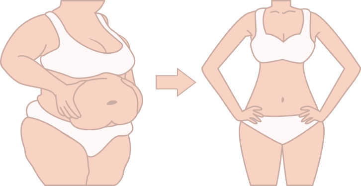

Cacao-reishi : cette boisson résoudra jamais le problème de l'obésité
Des scientifiques français ont fait une découverte incroyable. Ils ont trouvé comment perdre du poids sans régime et sans séances d'entraînement épuisantes. Cette découverte peut aider réduire les risques de maladies cardiovasculaires, améliorer la santé de l'intestin et réduire le taux de sucre dans le sang.
Les médecins sont ravis ! Le cacao aux champignons reishi peut débarrasser l'humanité d'un désastre médical, le syndrome métabolique, qui s'étend de plus en plus. C'est le problème de plus d'un quart de la population.
L'excès de poids et les problèmes de santé qui en découlent sont généralement associés au manque d'activité physique et une mauvaise alimentation, mais ce n'est pas vrai. Dans de nombreux cas, c'est le syndrome métabolique qui est en cause. Il se manifeste le plus souvent chez les femmes d'âge moyen.
Les signes du syndrome métabolique :
- augmentation de l'appétit, excès de poids,
- apathie, fatigabilité, baisse d'activité,
- maux de tête et hypertension artérielle.
Le syndrome est dangereux car il peut se transformer en une maladie chronique ou aiguë grave. Par exemple, les maladies coronariennes, les accidents vasculaires cérébraux, les crises cardiaques et le diabète.
"Les fèves de cacao et l'extrait de champignon reishi aident se débarrasser du syndrome métabolique. Une boisson contenant ces composants réduit le taux de cholestérol et de glucose dans le sang et aide perdre du poids"
Selon Richard Bruno, directeur de recherche et professeur dans une université médicale, de nombreux faits prouvent que la poudre de cacao et les champignons reishi réduisent le taux de cholestérol et de glucose dans le sang et aident perdre du poids.
Les fèves de cacao contiennent des polyphénols, de puissants antioxydants naturels. Les composés polyphénoliques - les catéchines - influencent la synthèse des acides gras, réduisent l'absorption du cholestérol et préviennent l'inflammation.
Les champignons Reishi sont riches en polysaccharides et en triterpènes, des substances qui contribuent stimuler le métabolisme. Il a été prouvé scientifiquement que le cacao et les champignons reishi mélangés dans des proportions adéquates permettent la production d'acides gras chaîne courte qui vous aident vous sentir rassasié même si vous mangez de petites portions et brûler plus rapidement les graisses excédentaires.
Le Magazine "Nutrition Thérapeutique" a publié les résultats d'une expérience laquelle ont participé 240 personnes en surpoids. Elles ont été divisées en deux groupes. Les participants du premier groupe ont pris une boisson base de cacao et de champignons reishi. Les participants du second groupe ont bu du cacao chaud.
1er groupe
Le taux de cholestérol a diminué de plus de 7 mg% chez les personnes du premier groupe. Le taux de mauvais cholestérol a diminué de plus de 2 mg%.
Les participants du premier groupe ont également fait état d'une amélioration de leur état de santé général. Ils ont également perdu plus de 18 % de leur poids.
2ème groupe
Le taux de cholestérol a diminué de 1,2 mg%, le taux de mauvais cholestérol a diminué de 0,2 mg%.
Les participants du deuxième groupe ont réussi perdre seulement 2% de leur poids.
avant
après
La magie des femmes
avant
après
La magie des femmes
"Le duo cacao et champignons reishi élimine les inflammations de l'intestin et aide perdre du poids rapidement.
Professeur dans une université de médecine
Richard Bruno
Les essais cliniques qui ont eu lieu l'université ont confirmé les résultats des essais précédents et ont conduit des découvertes inattendues. La boisson base de cacao et de champignons reishi ne se contente pas de réduire le taux de sucre dans le sang et d'avoir un effet bénéfique sur l'intestin, elle aide également perdre du poids sans stimulation supplémentaire.
Professeur Bruno :
"Les résultats montrent qu'il faut un mois pour réduire les taux de glucose et de cholestérol chez les personnes en bonne santé et chez celles qui souffrent du syndrome métabolique. La plupart des médecins recommandent d'essayer un régime et des séances d'entraînement avant de prescrire des médicaments. Malheureusement, de nombreuses personnes n'ont pas les moyens de changer leur mode de vie. Nous nous efforçons de fournir aux gens un nouvel outil alimentaire qui peut les aider réduire les risques liés au système métabolique. Cet outil est Magicoa ."
avant
après
La magie des femmes
avant
après
Le sourire des femmes
avant
après
La magie des femmes
avant
après
La magie des femmes
avant
après
La magie des femmes
avant
après
La magie des femmes
Magicoa est une boisson base de fèves de cacao et de champignons reishi. Elle contient également des composants supplémentaires qui décuplent la combustion des graisses, stimulant ainsi le métabolisme des lipides et des hydrates de carbone et contribuant nettoyer le foie et les reins.
Maltodextrine renforce la masse musculaire, augmente les bonnes bactéries, aide éliminer les sels de métaux lourds et les radionucléides, aide réduire le mauvais cholestérol et prévient la reprise du poids.
Inuline de chicorée est nécessaire l'augmentation des bonnes bactéries, stimule le métabolisme, aide réduire l'appétit et perdre plus rapidement les dépôts de graisse, prévient le syndrome métabolique.
Extrait de poivre noir stimule les processus métaboliques, aide brûler les calories, permet de briser les graisses, améliore la fonction des enzymes digestives, potentialise les arômes, revigore, donne de l'énergie et rend plus actif.
Piment stimule le métabolisme, améliore la circulation sanguine, stabilise la pression artérielle, améliore la fonction de la microflore, stimule la motilité intestinale, réduit les risques de troubles alimentaires et digestifs, améliore la fonction des récepteurs gustatifs et réduit l'appétit.
Le picolinate de chrome supprime l'appétit, réduit l'envie de sucreries et de malbouffe, réduit le nombre de repas rapides, améliore le métabolisme des lipides et des glucides, équilibre le taux de sucre dans le sang, aide prévenir la prise de poids.
Au total, ces composants aident perdre du poids en deux temps, sans régime onéreux ni activité physique. De nombreuses recherches confirment que la prise de Magicoa peut aider perdre 8 kg ou plus en un mois. Il s'agit d'un résultat durable, qui se maintient même après l'arrêt de la consommation de cette boisson.
Même si Magicoa est conçu pour lutter contre le surpoids, c'est tout le corps qui bénéficiera de ses effets. Cette boisson réduit l'appétit en 7 jours. Elle améliore la digestion, stimule le métabolisme des glucides et vous revigore en 14 18 jours. Ainsi, la qualité de vie s'améliore et de nombreux problèmes de santé sont résolus.
Tous ceux qui lisent cet article ont une chance unique d'acheter Magicoa directement auprès du fabricant avec une remise de 50 % pendant tout le mois. L'offre est limitée et n'est valable que pour le lot actuel. Dès qu'il n'y en a plus, la réduction n'est plus valable.
Si votre santé et votre beauté vous tiennent cœur, n'attendez pas, passez commande dès maintenant. 1 2 tasses de cette boisson aident perdre du poids en deux temps et de manière saine, sans régimes stricts et sans séances d'entraînement épuisantes. La boisson améliore le fonctionnement du système nerveux, le métabolisme, la digestion, la peau et réduit le taux de cholestérol et de sucre dans le sang.
Attention ! Nous vous rappelons que vous devez vous méfier des contrefaçons. Ne commandez pas le produit sur des sites tiers ! Faux Magicoa ne peut pas vous aider perdre du poids et peut nuire votre santé.
COMMANDER MagicoaENTRÉES DU JOUR
Les poissons gras sont indispensables aux personnes atteintes de psoriasis

Comment les tentatives de perte de poids peuvent conduire l'incontinence
Le thé vert : comment il nous aide être beaux
AVANT/APRÈS dans la section santé
Magicoa aide se débarrasser des kilos superflus
Magicoa a aidé se débarrasser des kilos en trop
Magicoa aide se débarrasser des kilos en trop
Commentaires
Sarah
J'ai de sérieux problèmes de métabolisme et il m'est difficile de perdre du poids. Je vais essayer cette solution, j'espère qu'elle m'aidera.
Hélène Dupont
N'hésitez pas le commander. Ma mère et moi avons suivi un traitement. Elle n'aime pas les solutions de perte de poids, c'est pourquoi je lui ai dit que c'était juste du chocolat chaud. Elle a aimé le goût et a perdu 8 kg. J'ai perdu 6 kg. Le plus important, c'est que son taux de cholestérol et sa glycémie se sont normalisés.
Nadine Poirier
J'ai pris Magicoa pendant un mois et j'ai obtenu d'excellents résultats. Aujourd'hui, de petites portions me suffisent pour me sentir rassasiée. D'ailleurs, je n'ai pas suivi de régime, j'ai simplement mangé moins de sucreries et de pâtisseries. Résultat : j'ai perdu 9 kg. Je n'ai plus de muffin ni de graisse au niveau du ventre. Cela me suffit.
Marie
J'ai une alimentation équilibrée et je peux manger presque tout ce que je veux - la règle est de ne pas trop manger. Lorsque j'ai besoin de perdre du poids, je fais un traitement base de Magicoa je perds plusieurs kilos en un mois et je reviens ensuite mon régime. C'est vraiment facile et j'ai fait une croix sur les régimes stricts.
Diane Fortin
En fait, le syndrome métabolique est très dangereux. C'est une bonne chose qu'une solution ait été trouvée. Si votre métabolisme ne fonctionne pas correctement, vous risquez de développer de nombreuses maladies. C'est une bonne chose qu'ils aient trouvé un moyen de résoudre ce problème.
Christine Vasseur
Je suis d'accord. J'ai souffert d'un trouble de l'alimentation qui a entraîné un syndrome métabolique. Seulement Magicoa m'a aidé. Aujourd'hui, mon corps est réglé comme une horloge et je perds du poids.
Marguerite Durand
Après une opération de la main, j'ai pris 20 kg ! Je ne peux pas aller la salle de sport cause de mes problèmes de santé. Je n'arrive pas suivre les régimes, j'échoue. Je vais essayer cette solution.
Laure Legrand
Je n'ai pas assez d'énergie pour aller la salle de sport ou pour cuisiner des aliments sains. Je suis tellement fatiguée que je mange quelque chose qui peut être cuisiné rapidement et je m'allonge.
Michelle Martel
Je pense que vous souffrez du syndrome métabolique. J'ai ressenti la même chose lorsque j'y étais confrontée. Je sais ce que l'on ressent quand on ne veut rien, quand on ignore le sport pendant des années. Si vous avez aussi des enfants, aurez-vous assez de temps pour vous ? N'oubliez pas non plus les personnes qui mangent sainement et font du sport, mais qui ne parviennent pas perdre du poids. Elles souffrent d'un syndrome métabolique. Je pense que des produits tels que Magicoa sont des sauveurs pour de nombreuses personnes. Sa formule "renouvelle" le métabolisme et permet votre corps de transformer les graisses en énergie. Il réduit également l'appétit. Je l'ai essayé et j'ai perdu 18 kg.
Jeanne
Après mon accouchement, j'ai pris plus de 35 kg et je n'ai pas réussi perdre du poids pendant 15 ans ! Finalement, j'ai eu de graves problèmes de santé. Mais j'ai eu la chance de rencontrer un très bon expert qui m'a recommandé Magicoa . J'ai perdu 30 kg en l'espace de six mois !
Isabelle Béroard
Il me semble que si vous arrêtez de prendre Magicoa vous reprendrez du poids. N'est ce pas ?
Élisabeth Tremblay
Non, vous n'avez pas raison. J'ai perdu du poids avec cette solution il y a un an et je n'ai pas repris de poids. Dans le passé, je mangeais trop, mais pas cause de la faim - j'avais juste envie de manger quelque chose. Magicoa m'a débarrassé de ce problème. L'envie de manger des sucreries a également disparu. La raison en est peut-être que cette boisson est aussi savoureuse qu'un chocolat chaud.